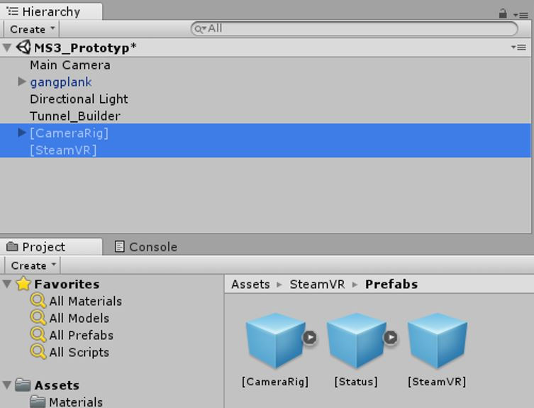

Erste Schritte mit Unity
Benötigte Vorkenntnisse
- Grundkenntnisse mit C#
Ziele
- Autonome Verwendung von Unity
- Wichtigste Grundlagen für ein Unity-Projekt
Anleitung
Unity bietet eine fast unüberschaubare Liste an Tutorials und Beispielprojekten an. Zudem gibt es diverse Foren und natürlich Stackoverflow. Untenstehend sind die in unseren Augen hilfreichsten Tutorials um sich die Grundlagen von Unity anzueignen:
- Grundlegende Funktionsweise Unity Das absolute Muss-Tutorial falls man noch nie mit Unity gearbeitet hat ist das «Roll-a-ball»-Tutorial. Dort werden die wichtigsten Prinzipien in Unity erklärt:
- Einrichten und Verwenden von Unity
- Bewegen eines Objektes
- Einbinden eines Scripts an ein Objekt
- Verwendung der Kamera
- Verwendung GIT mit Unity GIT macht Probleme mit Unity falls man es nicht richtig einstellt. Es ist aufwändig temporäre Dateien wieder aus dem Repository zu entfernen und Konflikte bei jedem push zu lösen. Folgendes wird genau erklärt:
- Notwendige Einstellungen in Unity
- Erstellung und Verwendung einer .gitignore-Datei für Unity-Projekte
- Prefabs-Konzept Prefabs sind ein Grundkonzept welches notwendig wird, sobald man ein Objekt dynamisch generieren will. Folgendes wird im Tutorial genau erklärt:
- Grundlagen hinter Prefabs
- Dynamische Generierung eines Objektes (mit angehängtem Script)
https://unity3d.com/de/learn/tutorials/s/roll-ball-tutorial (6.12.2017)
Referenzen
https://unity3d.com/de/learn/tutorials/s/roll-ball-tutorial (6.12.2017)
Einbindung von VR in Unity
Benötigte Vorkenntnisse
Ziele
- Verwendung von VR Hardware zur Steuerung der Kamera
- Ausführung des Projektes auf dem VR Headset
Anleitung
- Öffne oder erstelle ein Unity Projekt
- Steam VR Plugin aus dem Asset Store herunterladen
- Öffne den Asset Store mit Window -> Asset Store
- Suche im Asset Store nach „SteamVR Plugin“ und wähle dieses aus
- Klicke auf Download und lade das Plugin herunter
- Klicke im folgenden Dialog auf „All“ und anschliessend auf „Import“
- Im Dialogfeld „SteamVR_Settings“, klicke auf „Accept All“
- Klicke im Popup-Fenster auf "Ok"
- Das Plugin ist nun im „Project“-Fenster von Unity als Unterordner von „Assets“ sichtbar
- Wähle [CameraRig] und [SteamVR] im Ordner „Prefabs“ des heruntergeladenen Plugins aus
- Ziehe die beiden selektierten Elemente in das „Hierarchy“ Fenster von Unity. 
- Selektiere die Main Camera im Hierarchy-Fenster und drücke die Delete Taste um diese zu löschen. Dies ist notwendig, da es sonst zu Kompatibilitätsproblemen kommt.


Referenzen
https://www.raywenderlich.com/149239/htc-vive-tutorial-unity (01.11.2017)Verwendung von GIT mit Unity
Benötigte Vorkenntnisse
- Grundlagen Verwendung von Versionskontrollsystemen
- Grundlagen Verwendung GIT über Shell
- Grundlagen Verwendung Unity
- Verwendung Gitlab
Ziele
- Verwaltung eines Unity-Projektes in GIT
Anleitung
- Erstellung eines neuen Repository
Grundsätzlich ist jede Plattform welche GIT anbietet geeignet, in diesem Tutorial verwenden wir Gitlab. Dies da so momentan die Schulprojekte betreut werden. - Bei der Gitlab-Plattform mit deinem Benutzer anmelden
- Anschliessend unter «Your Projects» den Punkt «New Project» wählen
- Die Standard-Einstellungen so belassen und nur den Projekt-Namen im Feld «Project Name» auf den gewünschten Namen anpassen. Anschliessend auf «Create project» klicken
- Initialisierung des Projektes
- Im neu erstellten Repository die URL wie folgt kopieren
- Anschliessen die Git Bash Konsole im Ordner öffnen, in welchem das Projekt später liegen soll
- Anschliessend das leere Repository herunterladen per:
- Erstelle oder Kopiere ein Unity-Projekt in den neu erstellten Ordner
- Öffne die Editor-Settings des Projektes
- Setze unter «Version» den «Mode» auf «Visible Meta Files» und unter «Asset Serialization» den «Mode» auf «Force Text». Dies ist notwendig, damit Unity diese Änderungen nicht in notwendigen Projektdateien anpasst und somit zu Versionskonflikten führt.
- Erstellung einer .gitignore-Datei für Unity-Projektdateien
- Erstelle eine Text-Datei mit Namen gitignore.txt
- Kopiere folgenden Inhalt in diese Textdatei
- Benenne die Datei zu «.gitignore.» um. Ja Punkt-gitignore-Punkt, dadurch wird die Datei zu «.gitignore» - Windows ist hier komisch.
- Upload von Änderungen:
- Im Ordner die Git-Bash öffnen und folgende Befehle eingeben, wobei «Erster Commit» eine beliebige Nachricht für den Commit sein kann


[Ll]ibrary/
[Tt]emp/
[Oo]bj/
[Bb]uild/
[Bb]uilds/
Assets/AssetStoreTools*
# Visual Studio 2015 cache directory
.vs/
# Autogenerated VS/MD/Consulo solution and project files
ExportedObj/
.consulo/
*.csproj
*.unityproj
*.sln
*.suo
*.tmp
*.user
*.userprefs
*.pidb
*.booproj
*.svd
*.pdb
Physics2DSettings.asset
DynamicsManager.asset
# Unity3D generated meta files
*.pidb.meta
# Unity3D Generated File On Crash Reports
sysinfo.txt
# Builds
*.apk
*.unitypackage
Mögliche Stolpersteine
- Unity-Projekte benötigen viel Speicherplatz, es wird schnell an die Default-Grösse eines Gitlab-Repository gestossen. Dies wird durch die folgende Fehlermeldung angezeigt: error: unpack failed: unable to create temporary object directory To https://gitlab.enterpriselab.ch/tcnussba/pawi-vortext-tunnel.git ! [remote rejected] master -> master (unpacker error)
- Falls die .gitignore-Datei nicht verwendet wird so gibt es bei jedem Push eines anderen Benutzers ein Konflikt. Dies passiert weil Unity sehr viele temporäre lokale Dateien erzeugt.
- Sind die Editor-Settings nicht wie im Tutorial beschrieben gesetzt so ändert Unity Projekt-Assets was zu Konflikten führt beim Push/Pull.
Referenzen
https://github.com/github/gitignore/blob/master/Unity.gitignore (02.12.2017)https://robots.thoughtbot.com/how-to-git-with-unity (02.12.2017)
Lesen einer XML-Datei mit Unity
Benötigte Vorkenntnisse
- Grundlagen der objektorientierten Programmierung
- Grundlagen von XML
- Grundkenntnisse von C#
Ziele
- Eine XML-Datei auslesen zur Weiterverwendung in Unity
Anleitung
- Falls noch keine XML-Datei gegeben ist: Definiere die Struktur der XML-Datei. Das untenstehende Beispiel zeigt eine verschachtelte Struktur. Innerhalb des „Abschnitte“-Tags gibt es das sich wiederholende Element „Abschnitt“. Alle Abschnitte sollen also ausgelesen werden. Zusätzlich müssen die beiden Parameter („intro“ und „durchmesser“) auf dem Root-Element gelesen werden.
- Erstelle einen „Scripts“-Ordner im Unity-Projekt, als Unterordner von „Assets“ (falls „Scripts“-Ordner noch nicht vorhanden). Bei grösserer Anzahl an Scripts empfiehlt es sich, darin einen weiteren Unterordner „XML“ (o.ä.) zu erstellen, ausschliesslich zur Übersichtlichkeit.
- Definiere C#-Klassen analog zur XML-Struktur.
- Damit die XML-Datei später korrekt in ein Objekt „übersetzt“ wird, sind in folgenden Fällen noch Annotations im C#-Code notwendig:
- Wenn ein C#-Attribut auf ein XML-Element abgebildet werden soll, aber die Namensgebung in C# und XML sich unterscheiden, dann ist eine „XmlElement“-Annotation notwendig, welche den Namen des Xml-Knotens spezifiziert:
- Wenn ein Attribut (nicht Element!) aus der XML-Datei auf ein Attribut der Klasse gemappt werden soll, dann muss dies über eine „XmlAttribute“-Annotation angegeben werden. In unserem Beispiel wären dies also die beiden Attribute „intro“ und „durchmesser“ auf dem VortexTunnel-Element, welche entsprechend in der VortexTunnel-Klasse vermerkt werden:
- Wenn sich eine unbestimmte Anzahl an (gleich strukturierten) Elementen innerhalb eines XML-Elements befindet, dann ist eine „XmlArray“-Annotation notwendig. In unserem Beispiel ist dies der Fall beim „Abschnitte“-Element, da dieses eine beliebige Anzahl an „Abschnitt“-Elementen beinhalten kann:
- Wenn die Klassen übereinstimmend zur XML-Struktur erstellt wurden, dann kann die XML-Datei jetzt in ein Objekt des Root-Typen, in diesem Fall ein VortexTunnel-Objekt, geladen werden. In diesem Beispiel wird dies direkt in der statischen Methode Load der VortexTunnel-Klasse gemacht. Zuerst benötigt die VortexTunnel-Klasse jedoch noch folgende Referenzen:
- Nun muss die Load-Methode nur noch mit einem gültigen Pfad aufgerufen werden.
Die XML-Datei sollte im Unterordner „Assets“ des Unity-Projekts abgelegt werden. Dort kann die Datei auch nach dem Deployment noch eingesehen, geändert oder ausgetauscht werden.
Schlussendlich möchten wir in diesem Beispiel eine Klasse „VortexTunnel“ haben, die über eine Liste von „Abschnitt“-Objekten verfügt. Über eine statische Methode „Load“ direkt auf der VortexTunnel-Klasse soll dann ein Objekt erstellt werden, welches direkt die aus der XML-Datei geladenen Werte enthält. Folgendes Klassendiagramm soll veranschaulichen, wie die XML-Struktur aus Schritt 1 in eine Klassen-Struktur umgewandelt werden kann:
Um späteren zusätzlichen Aufwand zu minimieren empfiehlt es sich zudem, dass die Namensgebung der C# Klassen und derer Klassenvariablen mit der Namensgebung in der Xml-Datei übereinstimmen. Achtung: Dabei ist auch auf die Gross-Kleinschreibung zu achten! Es ist ausserdem anzumerken, dass eine C#-Klasse, die in Unity erstellt wird, standardmässig immer von MonoDevelop erbt. Für die soeben erstellten Klassen ist dies jedoch nicht notwendig.
Ist die Namensgebung in C# und XML jedoch identisch, dann kann diese Annotation weggelassen werden.
Danach kann die Load-Methode implementiert werden:
Das soeben erstellte Objekt „vortex“ beinhaltet nun alle Informationen aus der XML-Datei.
Referenzen
http://web.archive.org/web/20130921190426/http://tech.pro/tutorial/798/csharp-tutorial-xml-serialization (01.11.2017)Importieren externer Assets in Unity
Benötigte Vorkenntnisse
- Empfohlen: Erste Schritte mit Unity
Ziele
- Externe Assets wie beispielsweise 3D-Modelle in Unity importieren und verwenden
Anleitung
Je nach Anwendungsfall werden sehr spezifische Assets gebraucht, die neu erstellt werden müssen. In vielen Fällen reicht es jedoch aus, wenn fertige Assets verwendet werden, die im integrierten Asset Store von Unity heruntergeladen werden können. Dieses Tutorial soll beide Fälle aufzeigen.
Importieren aus dem Asset Store
- Öffnen Sie das Unity-Projekt, in welchem die Assets aus dem Store benötigt werden.
- Öffnen Sie den Asset Store, indem Sie auf das entsprechnde Tab klicken:
- Am oberen Ende des nun geöffneten Tabs befindet sich ein Suchfeld. Geben Sie hier Ihren Suchbegriff ein. Alternativ kann der Asset Store auch über die Kategorienliste auf der rechten Seite durchsucht werden.
- Starten Sie die Suche mit Enter oder über das Lupe-Symbol in der oberen rechten Ecke. Sofort wird das Suchergebnis angezeigt. Darüber können noch Filter gesetzt werden. In diesem Beispiel wird ausschliesslich nach kostenlosen Natur-Assets gesucht:
- Ist ein passendes Asset im Suchergebnis gefunden, dann wählen Sie dieses aus. Dieses wird nun im Detail angezeigt. Der genaue Inhalt des Asset-Pakets, sowie deren Version, benötigte Speichergrösse, etc. werden ersichtlich wenn Sie nach unten scrollen. Entspricht alles den Vorstellungen, dann klicken Sie auf „Download“.
- Es öffnet sich ein Fenster, welches die genaue Ordnerstruktur des Asset-Pakets anzeigt. Hier können nicht benötigte Teile deselektiert werden. Ist die Selektion abgeschlossen, dann bestätigen Sie mit „Import“.
- Alle selektierten Assets werden jetzt heruntergeladen und erscheinen automatisch im „Project“-Fenster von Unity. Dort liegt das gesamte Paket im „Assets“-Ordner, bereit zum Verwenden.
Importieren eigener Assets am Beispiel von Google Sketchup
Bei Assets kann es sich um 3D-Modelle, Bilder, Musik, Videos oder anderes handeln. Wichtig ist, dass die Datei in ein Format gebracht wird, welches von Unity geladen werden kann. Informationen zu unterstützten Datei-Endungen finden Sie unter: https://docs.unity3d.com/455/Documentation/Manual/ImportingAssets.html In diesem Beispiel wird gezeigt, wie ein 3D-Modell aus Google Sketchup exportiert und in Unity importiert wird. Der Prozess des Modellierens in Sketchup wird hier nicht weiter erläutert. Auch das ist jedoch keine Hexerei und kann z.B. auf https://www.sketchup.com/learn erlernt werden.
- Öffnen Sie ihr fertiges 3D-Modell in Google Sketchup (.skp-Datei). Wählen Sie dann Datei -> Exportieren -> 3D-Modell.
- Wählen Sie den Ort aus, wohin die Datei exportiert werden soll. Dies kann direkt der Assets-Ordner Ihres Unity-Projektes sein. Wählen Sie zudem die Dateiendung „.dae“ aus.
- Klicken Sie auf „Exportieren. Falls Sie die Datei nicht direkt in den Assets-Ordner exportiert haben, dann kopieren Sie die Datei nun dorthin. In Unity ist das neue Asset nun auch sichtbar. Ziehen Sie es ganz einfach aus dem „Project“-Fenster in das „Scene“-Fenster um das neue Asset in der Szene zu platzieren.

Tip zur Arbeit mit Unity und Google Sketchup
Bereits beim Erstellen des Modells in Sketchup können Sie sich später viel Zeit und Mühe sparen. Das Modell wird später in Unity bestimmte Grössenverhältnisse haben, die ganz einfach in „Unity-Metern“ gemessen wird. Damit das Modell später nicht neu skaliert- und auf andere Objekte angepasst werden muss, lohnt es sich Google Sketchup auch auf „Unity-Meter“ einzustellen.
- Klicken Sie in Sketchup auf Fenster -> Modellinformationen.
- Wählen Sie den Punkt „Einheiten“ aus. Stellen Sie nun die Längeneinheiten auf Dezimal Zoll ein. Schliessen Sie das Fenster wieder. Die Änderungen werden von Sketchup automatisch übernommen, jedoch muss dies für jede neue Datei wieder eingestellt werden. Ein Dezimal Zoll in Sketchup entspricht einem „Unity Meter“.
Referenzen
- https://docs.unity3d.com/Manual/ImportingAssets.html (4.12.2017)
- https://docs.unity3d.com/Manual/HOWTO-importObject.html (4.12.2017)
Verwendung von Prefabs in Unity
Benötigte Vorkenntnisse
- Grundlagen Verwendung Unity
- Prefabs erstellen: https://unity3d.com/de/learn/tutorials/topics/interface-essentials/prefabs-concept-usage (4.12.2017)
- Empfohlen: Grundkenntnisse C#
Ziele
- Zur Laufzeit Objekte anhand der Prefab-Definition erzeugen (mit einem C# Script)
Anleitung
Ein Prefab in Unity ist wie eine Art Schablone, aus welcher beliebig viele neue (Game-)Objekte erzeugt werden können. Sie sollten für dieses Tutorial bereits ein Prefab im „Assets“-Ordner Ihres Unity Projekts haben. Die folgenden Schritte zeigen auf, wie eine instanz eines solchen Prefabs zur Laufzeit erzeugt werden kann:
- Erstellen Sie zuerst einen Unterordner „Resources“ im Assets-Ordner. Die korrekte Namensgebung ist wichtig, da Unity nur Prefabs aus dem Resources-Ordner zur Laufzeit laden kann.
- Nun wird ein Script benötigt, welches eine oder mehrere Instanzen des prefabs erzeugt. Scripts bewirken in Unity nur etwas, wenn sie an ein GameObject angehängt sind, welches in der Szene platziert wurde. Erstellen sie darum ein neues leeres GameObject über GameObject -> Create Empy.
- Geben Sie dem neuen GameObject einen vielsagenden Namen. In diesem Beispiel heisst es „Tunnel_Builder“, da das Skript später dafür sorgen wird, dass ein Tunnel aus mehreren Abschnitten zusammengebaut wird. Die Tunnel-Abschnitte wurden natürlich als Prefabs im Assets-Ordner erstellt.
- Selektieren Sie das neue GameObject in der Hierarchy View und klicken Sie dann in der Inspector-View den Button „Add-Component“.
- Scrollen Sie ganz nach unten und wählen Sie „New Script“. Es öffnet sich ein weiterer Dialog. Wählen Sie dort als Sprache C# und benennen Sie das Script sinnvoll. Schliessen Sie den Dialog mit „Create and Add“ ab. Das Script sollte jetzt als Komponente des GameObjects sichtbar sein.
- Nun folgt der eigentliche Code, der Instanzen aus einem Prefab erzeugen soll. Rechtsklicken Sie auf das Skript und wählen Sie „Edit“ um es zu Bearbeiten. Der TunnelBuilder soll beim Start des Programms einen Tunnel erzeugen. Daher wird der folgende Code in die Start()-Methode geschrieben. Möglich wäre natürlich auch, dass Instanzen von Prefabs im Verlaufe des Programms erst benötigt werden. Dann müsste der Code in der Update()-Methode stehen. In diesem Falle darf aber eine Bedingung nicht fehlen, da sonst zu jedem Frame neue Instanzen erzeugt werden. Der Code kann in einer Zeile geschrieben werden. Ersetzen Sie den String (“TunnelStraightScaled”) mit dem Namen Ihres Prefabs:
- Starten Sie nun das Programm über den Play-Button in Unity. Wenn alles geklappt hat, dann sehen Sie nun in im Hierarchy Fenster ihre „Klone“, also die Instanzen, welche aus dem Prefab erzeugt wurden. Natürlich sehen sie (je nach Prefab) auch direkt das Ergebnis in der Scene- oder Game-View.